Cambridge Genomic Medicine Programme
Welcome to the Cambridge Genomic Medicine Programme (CGMP)
There are many different ways to study on this programme, from full and part time masters study, to completing individual modules for credit. With the large amount of options open to you it is useful to know how individual modules will aid you in your future or current workplace. To help you decide your route through the programme use the options below to navigate the modules that would fit with your chosen or potential career and the content of the modules themselves.
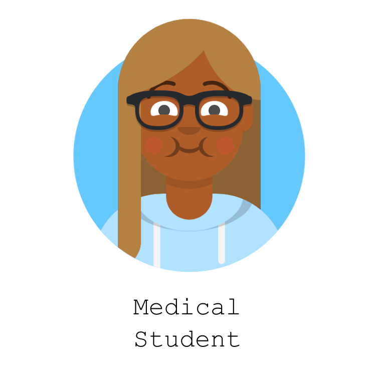
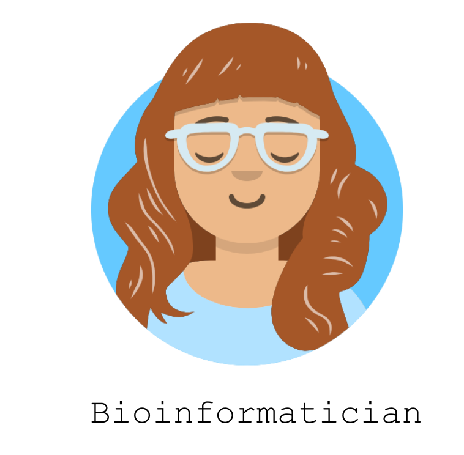
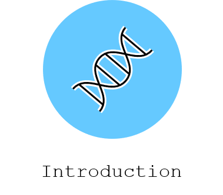
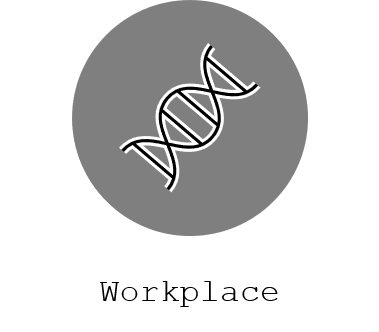
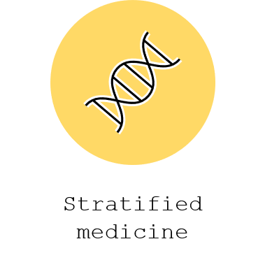
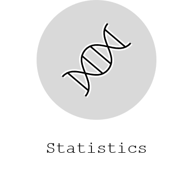
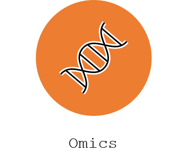
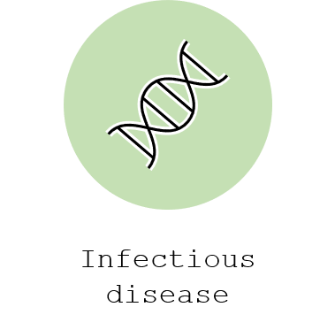
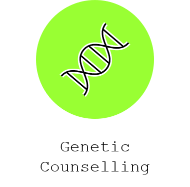
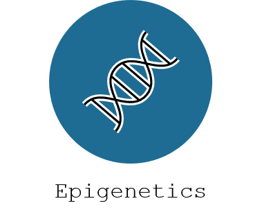
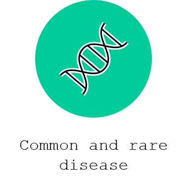
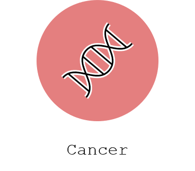
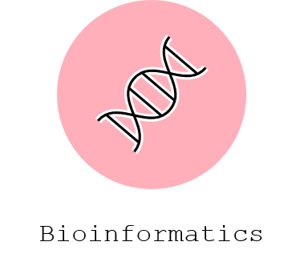
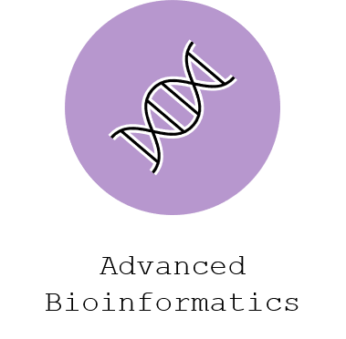
Pre-course reading
Students attend the genomic medicine programme from a wide diversity of backgrounds. Each module is therefore standalone to ensure that students all receive the same information. Some background reading prior to your attendance is useful, as it may allow you to pick up concepts quicker. We have prepared a short genetics primer for the course as a whole, and some pre-reading is available for module 1.
Contact the programme team
Contact - part time students
Email: genomics@pace.cam.ac.uk
Students who are studying part-time, either for an MSt, award bearing course, or credit are enrolled by University of Cambridge Professional and Continuing Education (PACE).
Contact - full time students
Email: clusterPG@medschl.cam.ac.uk
Students who are studying for a full-time MPhil or MRes are members of the Department of Genomic Medicine and should contact the department student administrator.
Original site notice
The first module week for 2025-26 begins 13th October 2025
Preserved from https://www.genomics.cam/home on 10 September 2026. Linked external services may require internet access. The original source snapshot is included with the migration files.